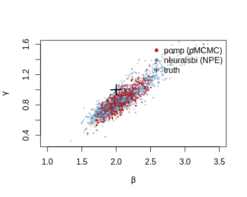
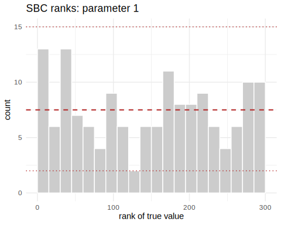

neuralsbi and pomp: two routes to an SIR posterior
Source:vignettes/sir-epidemic.Rmd
sir-epidemic.Rmdpomp is the
established R toolkit for partially observed Markov process models — the
stochastic dynamical systems common in epidemiology and ecology. It fits
them by particle filtering: a sequential Monte Carlo scheme
that only ever simulates the latent state process, so you never
write down its transition density. That makes pomp
simulation-based in the same spirit as neuralsbi. The two
packages differ in what they do next, and this vignette puts them on the
same problem to see whether their posteriors agree.
The problem is a stochastic SIR epidemic. A
population of size N splits into Susceptible, Infected, and
Recovered; the contact rate
drives new infections and the recovery rate
drives recoveries. We infer
from a single noisy incidence curve. The dynamics are genuinely
stochastic — infections and recoveries are random events, not a smooth
ODE — so there is no tractable likelihood for the observed curve.
(A note on notation: SBI writes the observed data , the role regression gives to . Here is the reported-case time series.)
The model, written twice
Both packages need the same generative model. pomp wants
it as C snippets; neuralsbi wants a vectorized R function.
The dynamics are identical: an Euler step with binomial transitions, and
reported cases drawn as a binomial thinning of the true weekly
incidence.
library(pomp)
sir_step <- Csnippet("
double dN_SI = rbinom(S, 1 - exp(-Beta * I / N * dt)); // new infections
double dN_IR = rbinom(I, 1 - exp(-gamma * dt)); // new recoveries
S -= dN_SI;
I += dN_SI - dN_IR;
R += dN_IR;
H += dN_SI; // accumulate incidence
")
sir_rinit <- Csnippet("S = N - I0; I = I0; R = 0; H = 0;")
# pomp needs BOTH the measurement simulator (rmeasure) and its DENSITY
# (dmeasure): the particle filter has to evaluate p(reports | H).
rmeas <- Csnippet("reports = rbinom(H, rho);")
dmeas <- Csnippet("lik = dbinom(reports, H, rho, give_log);")Fixed settings and the true rates that generate our observation:
N <- 1000; I0 <- 10; rho <- 0.5; Tobs <- 20
theta_true <- c(Beta = 2, gamma = 1) # basic reproduction number R0 = 2We assemble the pomp object and simulate one outbreak.
That simulated curve is the data both methods will condition on.
sir <- pomp(
data = data.frame(time = 1:Tobs, reports = NA),
times = "time", t0 = 0,
rprocess = euler(sir_step, delta.t = 1/10),
rinit = sir_rinit,
rmeasure = rmeas, dmeasure = dmeas,
accumvars = "H",
statenames = c("S", "I", "R", "H"),
paramnames = c("Beta", "gamma", "rho", "N", "I0")
)
pars <- c(theta_true, rho = rho, N = N, I0 = I0)
x_obs <- as.numeric(obs(simulate(sir, params = pars, seed = 12345)))
sir@data <- matrix(x_obs, nrow = 1, dimnames = list("reports", NULL))
plot(1:Tobs, x_obs, type = "b", pch = 16,
xlab = "week", ylab = "reported cases", main = "Observed outbreak")
plot of chunk unnamed-chunk-4
Route 1 — pomp: particle-filter MCMC
The particle filter estimates the likelihood at any parameter value
by propagating a swarm of simulated state trajectories and weighting
them by dmeasure.
logLik(pfilter(sir, params = pars, Np = 1000)) # unbiased log-likelihood estimate
#> [1] -39.34408For a Bayesian posterior, pmcmc embeds that filter
inside a Metropolis-Hastings sampler. We put uniform priors on the two
rates — the same priors neuralsbi will use — and run a
short adaptive chain.
sir_bayes <- pomp(sir,
dprior = Csnippet("
lik = dunif(Beta, 0.5, 5, 1) + dunif(gamma, 0.2, 3, 1);
lik = give_log ? lik : exp(lik);"),
paramnames = c("Beta", "gamma"))
set.seed(1)
chain <- pmcmc(sir_bayes, Nmcmc = 2000, Np = 500, params = pars,
proposal = mvn_rw_adaptive(rw.sd = c(Beta = 0.1, gamma = 0.05),
scale.start = 100, shape.start = 200))
post_pomp <- as.data.frame(traces(chain))[501:2000, c("Beta", "gamma")] # drop burn-in
round(colMeans(post_pomp), 3)
#> Beta gamma
#> 2.075 0.852
round(apply(post_pomp, 2, sd), 3)
#> Beta gamma
#> 0.221 0.168The chain concentrates around the true rates. This posterior is specific to this one outbreak: a different curve means running the sampler again.
Route 2 — neuralsbi: neural posterior estimation
neuralsbi never evaluates a measurement density. It only
needs to draw from the model, so we write the same dynamics as
a vectorized simulator: an
matrix of parameters in, an
matrix of reported curves out.
library(neuralsbi)
#>
#> Attaching package: 'neuralsbi'
#> The following object is masked from 'package:base':
#>
#> sample
sir_simulator <- function(theta) {
n <- nrow(theta); Beta <- theta[, 1]; gamma <- theta[, 2]
S <- rep(N - I0, n); I <- rep(I0, n); R <- rep(0, n)
out <- matrix(0, n, Tobs)
for (tt in seq_len(Tobs)) { # one column per week
H <- rep(0, n)
for (s in seq_len(10)) { # ten Euler substeps, dt = 1/10
dN_SI <- rbinom(n, S, 1 - exp(-Beta * I / N * 0.1))
dN_IR <- rbinom(n, I, 1 - exp(-gamma * 0.1))
S <- S - dN_SI; I <- I + dN_SI - dN_IR; R <- R + dN_IR; H <- H + dN_SI
}
out[, tt] <- rbinom(n, H, rho) # binomial reporting
}
out
}Neural Posterior Estimation (NPE) trains a conditional density estimator on simulated pairs, then conditions it on the observed curve. Training is amortized: one fit works for any incidence curve, not just this one. A mixture density network suits this smooth, unimodal posterior.
prior <- prior_uniform(low = c(0.5, 0.2), high = c(5, 3)) # same as pomp's dprior
# 8000 simulations to train a 2-parameter posterior. If it comes out too wide,
# add simulations before enlarging the network.
fit <- npe(prior, sir_simulator, n_simulations = 8000,
density_estimator = "mdn", max_epochs = 400,
n_restarts = 2, seed = 1)
post_npe <- posterior(fit, x_obs = x_obs)
draws_npe <- sample(post_npe, 4000)
round(colMeans(draws_npe), 3)
#> [1] 2.097 0.894
round(apply(draws_npe, 2, sd), 3)
#> [1] 0.347 0.239Do the posteriors agree?
Overlay the two posterior clouds and score them with a classifier two-sample test (C2ST): an accuracy near 0.5 means a classifier cannot tell the two sets of draws apart.
# thin the NPE draws to pomp's count so neither cloud simply outnumbers the other
npe_thin <- draws_npe[sample(nrow(draws_npe), nrow(post_pomp)), ]
plot(npe_thin[, 1], npe_thin[, 2], pch = 16, cex = 0.5,
col = adjustcolor("steelblue", 0.35),
xlab = expression(beta), ylab = expression(gamma),
xlim = c(1, 3.5), ylim = c(0.3, 1.6))
points(post_pomp$Beta, post_pomp$gamma, pch = 16, cex = 0.5,
col = adjustcolor("firebrick", 0.4))
points(2, 1, pch = 3, cex = 2, lwd = 2)
legend("topright", c("pomp (pMCMC)", "neuralsbi (NPE)", "truth"),
col = c("firebrick", "steelblue", "black"), pch = c(16, 16, 3), bty = "n")
plot of chunk unnamed-chunk-9
The two posteriors sit on top of each other: same location, same
–
ridge (the two rates trade off because the data mostly pin down their
ratio
).
The C2ST lands well above 0.5, and the plot shows why — the
neuralsbi cloud is a little broader. That is the expected
signature of the trade-off. pomp’s particle filter exploits
the known binomial measurement density to extract the sharpest
posterior this dataset supports; NPE is handed only simulations and, at
an 8000-simulation budget, stays slightly more cautious. More
simulations tighten it toward pomp.
Is that extra width honest or a bug? Simulation-based calibration answers it without a reference posterior: draw from the prior, simulate, and rank the truth among the posterior draws. Calibrated posteriors give uniform ranks.
sbc_res <- sbc(fit, sir_simulator, n_sbc = 150, n_posterior_samples = 300,
seed = 2)
sbc_res # large p-values = calibrated
#> <nsbi_sbc> 150 trials, 300 posterior samples each
#> per-parameter uniformity p-values (large = calibrated):
#> 0.312 0.181
plot_sbc(sbc_res, param = 1)
plot of chunk unnamed-chunk-10
The ranks are flat and the p-values large: NPE’s wider intervals are
calibrated, not broken. neuralsbi and pomp
give the same answer here, and NPE simply reports a touch more
uncertainty for the simulations it was given.
Similarities and differences
pomp (pMCMC) |
neuralsbi (NPE) |
|
|---|---|---|
| Latent state process | simulated only | simulated only |
| Measurement model | needs the density (dmeasure) |
needs only to simulate |
| Inference | particle filter + MCMC | train a neural density estimator |
| Reusable across datasets | no — refit per observation | yes — amortized |
| Cost structure | cheap setup, rerun per dataset | expensive training, then instant |
| Exactness | exact in the MCMC limit | approximate; must be calibration-checked |
Reach for pomp when you can write the measurement
density and have one or a few datasets to fit — it will give the
sharpest, best-understood posterior. Reach for neuralsbi
when the measurement model itself is a black box, or when you need to
condition on many datasets and amortization pays for the training up
front. On this problem they agree, which is the reassuring outcome: two
different simulation-based machines, pointed at the same stochastic
model, recover the same rates.
For the neuralsbi workflow in more depth, see
vignette("neuralsbi") and
vignette("diagnostics"); for pomp, the package
tutorials.